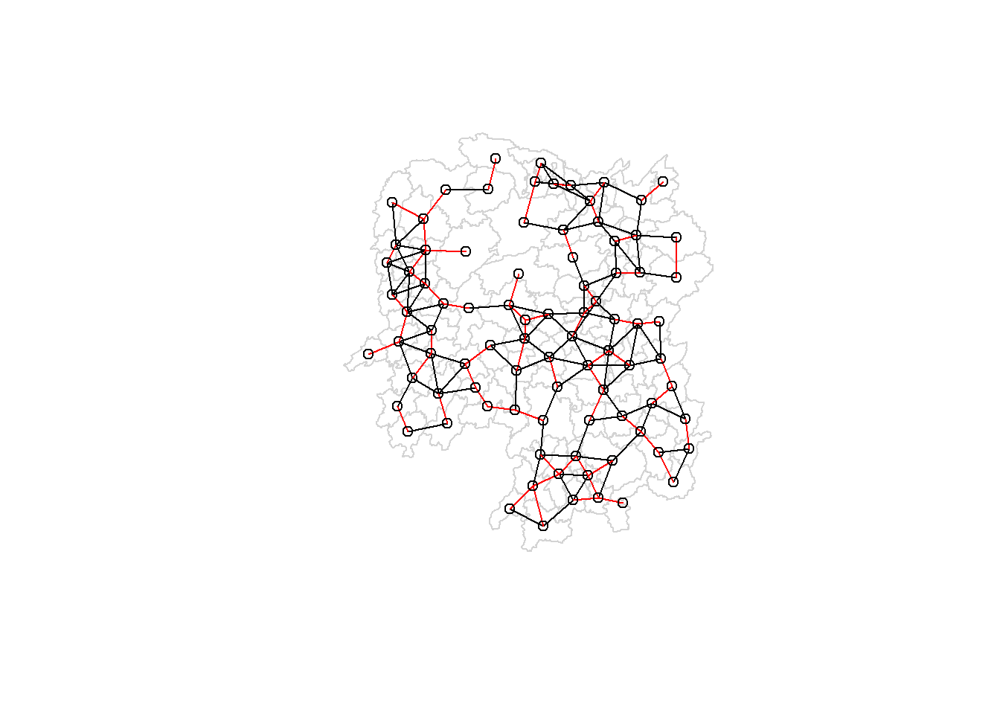

pacman::p_load(sf, spdep, tmap, tidyverse, knitr)Hands-on Exercise 2: Spatial Weights & Spatial Autocorrelation
On this page, I address Hands-On Exercise for Chapter 02 - Spatial Weights and Applications
1. Spatial Weights & Applications
1.2 Import Hunan Shapefile datasets
1.1.1 Geospatial Data Sets
/data/geospatial/Hunan.###: This is a geospatial data set in ESRI shapefile format.
1.2.2 Aspatial Data Sets
/data/aspatial/Hunan_2012.csv: This csv file contains selected Hunan’s local development indicators in 2012.
1.3 Import packages & files
hunan <- st_read(dsn = "data/geospatial",
layer = "Hunan")Reading layer `Hunan' from data source
`C:\1darren\ISSS624\Hands-on_Ex02\data\geospatial' using driver `ESRI Shapefile'
Simple feature collection with 88 features and 7 fields
Geometry type: POLYGON
Dimension: XY
Bounding box: xmin: 108.7831 ymin: 24.6342 xmax: 114.2544 ymax: 30.12812
Geodetic CRS: WGS 84hunan2012 <- read_csv("data/aspatial/Hunan_2012.csv")Rows: 88 Columns: 29
── Column specification ────────────────────────────────────────────────────────
Delimiter: ","
chr (2): County, City
dbl (27): avg_wage, deposite, FAI, Gov_Rev, Gov_Exp, GDP, GDPPC, GIO, Loan, ...
ℹ Use `spec()` to retrieve the full column specification for this data.
ℹ Specify the column types or set `show_col_types = FALSE` to quiet this message.- Left join to select only specific columns
hunan <- left_join(hunan,hunan2012)%>%
select(1:4, 7, 15)Joining with `by = join_by(County)`1.4 Visualisation with qtm next to basemap
show code
basemap <- tm_shape(hunan) +
tm_polygons() +
tm_text("NAME_3", size=0.5)
gdppc <- qtm(hunan, "GDPPC")
tmap_arrange(basemap, gdppc, asp=1, ncol=2)
1.5 Contiguity Spatial Weights
- There are 2 types of contiguity, based on chess pieces
QUEENtwo regions are contiguous if they share a vertex;ROOKtwo regions are contiguous if they share an edge;
- Literature suggests they are mostly similar, but
QUEENis more robust at capturing neighbouring/contiguity more consistently
1.5.1 QUEEN Contiguity Neighbours
show code
wm_q <- poly2nb(hunan, queen=TRUE)
summary(wm_q)Neighbour list object:
Number of regions: 88
Number of nonzero links: 448
Percentage nonzero weights: 5.785124
Average number of links: 5.090909
Link number distribution:
1 2 3 4 5 6 7 8 9 11
2 2 12 16 24 14 11 4 2 1
2 least connected regions:
30 65 with 1 link
1 most connected region:
85 with 11 linksIdentifying all neighbours of most connected region:
show code
wm_q[[85]] [1] 1 2 3 5 6 32 56 57 69 75 78- Name of region
show code
cat("Most connected region:", hunan$County[85], "\n\n>> ID\t| Name \t| GDPPC \t| Neighbours:")Most connected region: Taoyuan
>> ID | Name | GDPPC | Neighbours:show code
for (value in wm_q[[85]]){
cat("\n>> ", value, "\t|", hunan$County[value], " \t|", hunan$GDPPC[value], " \t|", wm_q[[value]])
}
>> 1 | Anxiang | 23667 | 2 3 4 57 85
>> 2 | Hanshou | 20981 | 1 57 58 78 85
>> 3 | Jinshi | 34592 | 1 4 5 85
>> 5 | Linli | 25554 | 3 4 6 85
>> 6 | Shimen | 27137 | 4 5 69 75 85
>> 32 | Yuanling | 24194 | 24 31 50 54 55 56 75 85
>> 56 | Anhua | 14567 | 8 31 32 36 78 80 85
>> 57 | Nan | 21311 | 1 2 58 64 76 85
>> 69 | Cili | 18714 | 6 75 85
>> 75 | Sangzhi | 14624 | 6 32 53 55 69 85
>> 78 | Taojiang | 19509 | 2 8 9 56 58 68 85- Print adjacency matrix (warning: long!)
Using
str() to print adjacency weight matrix
str(wm_q)List of 88
$ : int [1:5] 2 3 4 57 85
$ : int [1:5] 1 57 58 78 85
$ : int [1:4] 1 4 5 85
$ : int [1:4] 1 3 5 6
$ : int [1:4] 3 4 6 85
$ : int [1:5] 4 5 69 75 85
$ : int [1:4] 67 71 74 84
$ : int [1:7] 9 46 47 56 78 80 86
$ : int [1:6] 8 66 68 78 84 86
$ : int [1:8] 16 17 19 20 22 70 72 73
$ : int [1:3] 14 17 72
$ : int [1:5] 13 60 61 63 83
$ : int [1:4] 12 15 60 83
$ : int [1:3] 11 15 17
$ : int [1:4] 13 14 17 83
$ : int [1:5] 10 17 22 72 83
$ : int [1:7] 10 11 14 15 16 72 83
$ : int [1:5] 20 22 23 77 83
$ : int [1:6] 10 20 21 73 74 86
$ : int [1:7] 10 18 19 21 22 23 82
$ : int [1:5] 19 20 35 82 86
$ : int [1:5] 10 16 18 20 83
$ : int [1:7] 18 20 38 41 77 79 82
$ : int [1:5] 25 28 31 32 54
$ : int [1:5] 24 28 31 33 81
$ : int [1:4] 27 33 42 81
$ : int [1:3] 26 29 42
$ : int [1:5] 24 25 33 49 54
$ : int [1:3] 27 37 42
$ : int 33
$ : int [1:8] 24 25 32 36 39 40 56 81
$ : int [1:8] 24 31 50 54 55 56 75 85
$ : int [1:5] 25 26 28 30 81
$ : int [1:3] 36 45 80
$ : int [1:6] 21 41 47 80 82 86
$ : int [1:6] 31 34 40 45 56 80
$ : int [1:4] 29 42 43 44
$ : int [1:4] 23 44 77 79
$ : int [1:5] 31 40 42 43 81
$ : int [1:6] 31 36 39 43 45 79
$ : int [1:6] 23 35 45 79 80 82
$ : int [1:7] 26 27 29 37 39 43 81
$ : int [1:6] 37 39 40 42 44 79
$ : int [1:4] 37 38 43 79
$ : int [1:6] 34 36 40 41 79 80
$ : int [1:3] 8 47 86
$ : int [1:5] 8 35 46 80 86
$ : int [1:5] 50 51 52 53 55
$ : int [1:4] 28 51 52 54
$ : int [1:5] 32 48 52 54 55
$ : int [1:3] 48 49 52
$ : int [1:5] 48 49 50 51 54
$ : int [1:3] 48 55 75
$ : int [1:6] 24 28 32 49 50 52
$ : int [1:5] 32 48 50 53 75
$ : int [1:7] 8 31 32 36 78 80 85
$ : int [1:6] 1 2 58 64 76 85
$ : int [1:5] 2 57 68 76 78
$ : int [1:4] 60 61 87 88
$ : int [1:4] 12 13 59 61
$ : int [1:7] 12 59 60 62 63 77 87
$ : int [1:3] 61 77 87
$ : int [1:4] 12 61 77 83
$ : int [1:2] 57 76
$ : int 76
$ : int [1:5] 9 67 68 76 84
$ : int [1:4] 7 66 76 84
$ : int [1:5] 9 58 66 76 78
$ : int [1:3] 6 75 85
$ : int [1:3] 10 72 73
$ : int [1:3] 7 73 74
$ : int [1:5] 10 11 16 17 70
$ : int [1:5] 10 19 70 71 74
$ : int [1:6] 7 19 71 73 84 86
$ : int [1:6] 6 32 53 55 69 85
$ : int [1:7] 57 58 64 65 66 67 68
$ : int [1:7] 18 23 38 61 62 63 83
$ : int [1:7] 2 8 9 56 58 68 85
$ : int [1:7] 23 38 40 41 43 44 45
$ : int [1:8] 8 34 35 36 41 45 47 56
$ : int [1:6] 25 26 31 33 39 42
$ : int [1:5] 20 21 23 35 41
$ : int [1:9] 12 13 15 16 17 18 22 63 77
$ : int [1:6] 7 9 66 67 74 86
$ : int [1:11] 1 2 3 5 6 32 56 57 69 75 ...
$ : int [1:9] 8 9 19 21 35 46 47 74 84
$ : int [1:4] 59 61 62 88
$ : int [1:2] 59 87
- attr(*, "class")= chr "nb"
- attr(*, "region.id")= chr [1:88] "1" "2" "3" "4" ...
- attr(*, "call")= language poly2nb(pl = hunan, queen = TRUE)
- attr(*, "type")= chr "queen"
- attr(*, "sym")= logi TRUE1.5.2 ROOK Contiguity Neighbours
show code
wm_r <- poly2nb(hunan, queen=FALSE)
summary(wm_r)Neighbour list object:
Number of regions: 88
Number of nonzero links: 440
Percentage nonzero weights: 5.681818
Average number of links: 5
Link number distribution:
1 2 3 4 5 6 7 8 9 10
2 2 12 20 21 14 11 3 2 1
2 least connected regions:
30 65 with 1 link
1 most connected region:
85 with 10 links- Who’s not there?
setdiff(wm_q[[85]], wm_r[[85]])[1] 571.5.3 Exploring Contiguity Weights
- Get
latitude,longtiudebymap_dblretrieving double-precision datatype via map function ongeometrycolumn ofhunan- use
st_centroidto find centroid of each row - indexing via [[1]], [[2] for long,lat of centroid
- retrieving a vector of regions
cbindcombines separate vectors back into single dataframe (coords)with two columns
show code
longitude <- map_dbl(hunan$geometry, ~st_centroid(.x)[[1]])
latitude <- map_dbl(hunan$geometry, ~st_centroid(.x)[[2]])
coords <- cbind(longitude, latitude)
head(coords) longitude latitude
[1,] 112.1531 29.44362
[2,] 112.0372 28.86489
[3,] 111.8917 29.47107
[4,] 111.7031 29.74499
[5,] 111.6138 29.49258
[6,] 111.0341 29.79863- now plot Queen-contiguity based map using centroid vertices:
show code
par(mfrow=c(1,3))
plot(hunan$geometry, border="lightgrey")
plot(wm_q, coords, pch = 19, cex = 0.6, add = TRUE, col= "red", main="Queen Contiguity")
title("QUEEN Contiguity")
plot(hunan$geometry, border="lightgrey")
plot(wm_r, coords, pch = 19, cex = 0.6, add = TRUE, col = "blue", main="Rook Contiguity")
title("ROOK Contiguity")
plot(hunan$geometry, border="lightgrey")
plot(wm_q, coords, pch = 19, cex = 0.6, add = TRUE, col= "red", main="Queen Contiguity")
plot(wm_r, coords, pch = 19, cex = 0.6, add = TRUE, col = "blue", main="Rook Contiguity")
title("Differences:")1.6 Distance-based neighbours
1.6.1 Identifying max inter-neighbour distance
k1created by parsingknearneighreturns matrix of k (default=1) nearest neighbours’s index based oncoords, apparently inknnobjectknn2nbconverts k-nearest-neighbours to neighbours-list innbclass
unlistunbinds list structure of output into vectornbdiststakes innbneighbours list and returns euclidean distances between neighbours in same structure
- all this searches the greatest neighbour distance (max 61.79 below) to ensure each region has at least one neighbour
show code
# coords <- coordinates(hunan) #following previous steps
k1 <- knn2nb(knearneigh(coords))
k1dists <- unlist(nbdists(k1, coords, longlat = TRUE))
summary(k1dists) Min. 1st Qu. Median Mean 3rd Qu. Max.
24.79 32.57 38.01 39.07 44.52 61.79 1.6.2 Creating fixed distance weight matrix
dnearneighreturns list of vectors of regions satisfying distance criteria (eg within max neighbour distance)
show code
wm_d62 <- dnearneigh(coords, 0, 62, longlat = TRUE)
cat("Printing details of distance weight matrix\n")Printing details of distance weight matrixshow code
wm_d62Neighbour list object:
Number of regions: 88
Number of nonzero links: 324
Percentage nonzero weights: 4.183884
Average number of links: 3.681818 show code
cat("\nInspecting first six rows of [wm_d62] obj \n")
Inspecting first six rows of [wm_d62] obj show code
cat(str(head(wm_d62, n=6)))List of 6
$ : int [1:5] 3 4 5 57 64
$ : int [1:4] 57 58 78 85
$ : int [1:4] 1 4 5 57
$ : int [1:3] 1 3 5
$ : int [1:4] 1 3 4 85
$ : int 69show code
cat("\n^ Note how 6th row only has one neighbour, i.e. region 69")
^ Note how 6th row only has one neighbour, i.e. region 69
Quiz: What is the meaning of “Average number of links: 3.681818” shown above?
- Each region has 3.68 links on average, i.e. (total number of links) / (total number of regions)
- Alternative structure (warning: long!)
- this uses
tableto combine the column name fromhunan$Countrywith cardapparently looks at the length of the neighbour list and prints 1 if yes, 0 if no (i.e. Anhua has1neighobur, Anren has4)
- this uses
Using
str() to print adjacency weight matrix
table(hunan$County, card(wm_d62))
1 2 3 4 5 6
Anhua 1 0 0 0 0 0
Anren 0 0 0 1 0 0
Anxiang 0 0 0 0 1 0
Baojing 0 0 0 0 1 0
Chaling 0 0 1 0 0 0
Changning 0 0 1 0 0 0
Changsha 0 0 0 1 0 0
Chengbu 0 1 0 0 0 0
Chenxi 0 0 0 1 0 0
Cili 0 1 0 0 0 0
Dao 0 0 0 1 0 0
Dongan 0 0 1 0 0 0
Dongkou 0 0 0 1 0 0
Fenghuang 0 0 0 1 0 0
Guidong 0 0 1 0 0 0
Guiyang 0 0 0 1 0 0
Guzhang 0 0 0 0 0 1
Hanshou 0 0 0 1 0 0
Hengdong 0 0 0 0 1 0
Hengnan 0 0 0 0 1 0
Hengshan 0 0 0 0 0 1
Hengyang 0 0 0 0 0 1
Hongjiang 0 0 0 0 1 0
Huarong 0 0 0 1 0 0
Huayuan 0 0 0 1 0 0
Huitong 0 0 0 1 0 0
Jiahe 0 0 0 0 1 0
Jianghua 0 0 1 0 0 0
Jiangyong 0 1 0 0 0 0
Jingzhou 0 1 0 0 0 0
Jinshi 0 0 0 1 0 0
Jishou 0 0 0 0 0 1
Lanshan 0 0 0 1 0 0
Leiyang 0 0 0 1 0 0
Lengshuijiang 0 0 1 0 0 0
Li 0 0 1 0 0 0
Lianyuan 0 0 0 0 1 0
Liling 0 1 0 0 0 0
Linli 0 0 0 1 0 0
Linwu 0 0 0 1 0 0
Linxiang 1 0 0 0 0 0
Liuyang 0 1 0 0 0 0
Longhui 0 0 1 0 0 0
Longshan 0 1 0 0 0 0
Luxi 0 0 0 0 1 0
Mayang 0 0 0 0 0 1
Miluo 0 0 0 0 1 0
Nan 0 0 0 0 1 0
Ningxiang 0 0 0 1 0 0
Ningyuan 0 0 0 0 1 0
Pingjiang 0 1 0 0 0 0
Qidong 0 0 1 0 0 0
Qiyang 0 0 1 0 0 0
Rucheng 0 1 0 0 0 0
Sangzhi 0 1 0 0 0 0
Shaodong 0 0 0 0 1 0
Shaoshan 0 0 0 0 1 0
Shaoyang 0 0 0 1 0 0
Shimen 1 0 0 0 0 0
Shuangfeng 0 0 0 0 0 1
Shuangpai 0 0 0 1 0 0
Suining 0 0 0 0 1 0
Taojiang 0 1 0 0 0 0
Taoyuan 0 1 0 0 0 0
Tongdao 0 1 0 0 0 0
Wangcheng 0 0 0 1 0 0
Wugang 0 0 1 0 0 0
Xiangtan 0 0 0 1 0 0
Xiangxiang 0 0 0 0 1 0
Xiangyin 0 0 0 1 0 0
Xinhua 0 0 0 0 1 0
Xinhuang 1 0 0 0 0 0
Xinning 0 1 0 0 0 0
Xinshao 0 0 0 0 0 1
Xintian 0 0 0 0 1 0
Xupu 0 1 0 0 0 0
Yanling 0 0 1 0 0 0
Yizhang 1 0 0 0 0 0
Yongshun 0 0 0 1 0 0
Yongxing 0 0 0 1 0 0
You 0 0 0 1 0 0
Yuanjiang 0 0 0 0 1 0
Yuanling 1 0 0 0 0 0
Yueyang 0 0 1 0 0 0
Zhijiang 0 0 0 0 1 0
Zhongfang 0 0 0 1 0 0
Zhuzhou 0 0 0 0 1 0
Zixing 0 0 1 0 0 01.6.2x Unfinished Disjoint subgraph plot
n.comp.nb()finds the number of disjoint connected subgraphs [see source]
show code
n_comp <- n.comp.nb(wm_d62)
cat("Number of disjoint subgraphs:", n_comp$nc)Number of disjoint subgraphs: 1show code
cat("\nTable of disjoint subgraphs by region:\n")
Table of disjoint subgraphs by region:show code
table(n_comp$comp.id)
1
88 show code
cat("^ i.e. 88 regions all report 1 distjoint subgraph, i.e. no region is disjoint")^ i.e. 88 regions all report 1 distjoint subgraph, i.e. no region is disjoint1.6.2.1 Plotting fixed distance weight matrix
- Plot background of
hunan$Geometry - Plot points of centroids in
coords, connected by black lines - Plot k=1-nearest-neighbours (i.e. show nearest neighbours as in
k1) in red lines
show code
plot(hunan$geometry, border="lightgrey")
plot(wm_d62, coords, add=TRUE)
plot(k1, coords, add=TRUE, col="red", length=0.08)
- Side-by-side comparison:
show code
par(mfrow=c(1,2))
plot(hunan$geometry, border="lightgrey")
plot(k1, coords, add=TRUE, col="red", length=0.08, main="1st nearest neighbours")
title("1st Nearest Neighbours")
plot(hunan$geometry, border="lightgrey")
plot(wm_d62, coords, add=TRUE, pch = 19, cex = 0.6, main="Distance link")
title("Distance-Based Neighbours")
1.6.3 Exploring Contiguity Weights
- Now allowing 6 nearest neighbours using knn
show code
knn6 <- knn2nb(knearneigh(coords, k=6))
cat("Printing details of knn neighbour matrix, k=6 \n")Printing details of knn neighbour matrix, k=6 show code
knn6Neighbour list object:
Number of regions: 88
Number of nonzero links: 528
Percentage nonzero weights: 6.818182
Average number of links: 6
Non-symmetric neighbours listshow code
cat("\nInspecting first six rows of [knn6] obj \n")
Inspecting first six rows of [knn6] obj show code
cat(str(head(knn6, n=6)))List of 6
$ : int [1:6] 2 3 4 5 57 64
$ : int [1:6] 1 3 57 58 78 85
$ : int [1:6] 1 2 4 5 57 85
$ : int [1:6] 1 3 5 6 69 85
$ : int [1:6] 1 3 4 6 69 85
$ : int [1:6] 3 4 5 69 75 85show code
cat("\n^ Note how every row now has 6 neighbours exactly.")
^ Note how every row now has 6 neighbours exactly.- Here’s what it looks like instead:
show code
par(mfrow=c(1,2))
plot(hunan$geometry, border="lightgrey")
plot(k1, coords, pch = 19, cex = 0.6, add=TRUE, col="red", length=0.08, main="1st nearest neighbours")
title("1st Nearest Neighbours")
plot(hunan$geometry, border="lightgrey")
plot(knn6, coords, pch = 19, cex = 0.6, add = TRUE, col = "red")
title("6st Nearest Neighbours")1.7 Using Inversed Distance to plot neighbour
- Starting with
wm_qfor queen contiguity,coordsfor centroidsnbdiststakes innbneighbours list and returns euclidean distances between neighbours in same structurelonglatuses Great Circle distances i.e. distance on a round earth instead of flat map
lapplyfunction(x)applies inverse (1/x) to all output distances
show code
dist <- nbdists(wm_q, coords, longlat = TRUE)
ids <- lapply(dist, function(x) 1/(x))
cat("\nInspecting first five rows of [knn6] obj \n\n")
Inspecting first five rows of [knn6] obj show code
head(ids, 5)[[1]]
[1] 0.01535405 0.03916350 0.01820896 0.02807922 0.01145113
[[2]]
[1] 0.01535405 0.01764308 0.01925924 0.02323898 0.01719350
[[3]]
[1] 0.03916350 0.02822040 0.03695795 0.01395765
[[4]]
[1] 0.01820896 0.02822040 0.03414741 0.01539065
[[5]]
[1] 0.03695795 0.03414741 0.01524598 0.016183541.7.1 Creating row-standardised weight matrix
style "W"gives equal weight to each neighbour (e.g. 0.125 for 8 neighbours, below)
show code
rswm_q <- nb2listw(wm_q, style="W", zero.policy = TRUE)
rswm_qCharacteristics of weights list object:
Neighbour list object:
Number of regions: 88
Number of nonzero links: 448
Percentage nonzero weights: 5.785124
Average number of links: 5.090909
Weights style: W
Weights constants summary:
n nn S0 S1 S2
W 88 7744 88 37.86334 365.9147show code
cat("\nInspecting weights for region 10, with 8 neighbours: \n")
Inspecting weights for region 10, with 8 neighbours: show code
rswm_q$weights[10][[1]]
[1] 0.125 0.125 0.125 0.125 0.125 0.125 0.125 0.125style "B"performs standardisation based on row distance
show code
rswm_ids <- nb2listw(wm_q, glist=ids, style="B", zero.policy=TRUE)
rswm_idsCharacteristics of weights list object:
Neighbour list object:
Number of regions: 88
Number of nonzero links: 448
Percentage nonzero weights: 5.785124
Average number of links: 5.090909
Weights style: B
Weights constants summary:
n nn S0 S1 S2
B 88 7744 8.786867 0.3776535 3.8137show code
cat("\nPrinting summary stats for row-standardised weights matrix \n")
Printing summary stats for row-standardised weights matrix show code
summary(unlist(rswm_ids$weights)) Min. 1st Qu. Median Mean 3rd Qu. Max.
0.008218 0.015088 0.018739 0.019614 0.022823 0.040338 show code
cat("\nInspecting weights for region 10, with 8 neighbours: \n")
Inspecting weights for region 10, with 8 neighbours: show code
rswm_ids$weights[10][[1]]
[1] 0.02281552 0.01387777 0.01538326 0.01346650 0.02100510 0.02631658 0.01874863
[8] 0.015000461.8 Making use of spatial weight matrix
1.8.1 spatial lag with row-standardized weights
Quiz: Can you see the meaning of Spatial lag with row-standardized weights now?
- Spatial lag describes how spatially-neighbouring regions affect each other
style "W"gives equal weight to each neighbour (e.g. 0.125 for 8 neighbours, below)style "B"gives equal weight to each neighbour (e.g. 1 for all 8 neighbours)
show code
rswm_q <- nb2listw(wm_q, style="W", zero.policy = TRUE)
rswm_qCharacteristics of weights list object:
Neighbour list object:
Number of regions: 88
Number of nonzero links: 448
Percentage nonzero weights: 5.785124
Average number of links: 5.090909
Weights style: W
Weights constants summary:
n nn S0 S1 S2
W 88 7744 88 37.86334 365.9147show code
cat("\nInspecting weights for region 10, with 8 neighbours: \n")
Inspecting weights for region 10, with 8 neighbours: show code
rswm_q$weights[10][[1]]
[1] 0.125 0.125 0.125 0.125 0.125 0.125 0.125 0.1251.8.2 spatial lag as a sum of neighbouring values
style "W"gives equal weight to each neighbour (e.g. 0.125 for 8 neighbours, below)style "B"gives equal weight to each neighbour (e.g. 1 for all 8 neighbours)
show code
rswm_q <- nb2listw(wm_q, style="W", zero.policy = TRUE)
rswm_qCharacteristics of weights list object:
Neighbour list object:
Number of regions: 88
Number of nonzero links: 448
Percentage nonzero weights: 5.785124
Average number of links: 5.090909
Weights style: W
Weights constants summary:
n nn S0 S1 S2
W 88 7744 88 37.86334 365.9147show code
cat("\nInspecting weights for region 10, with 8 neighbours: \n")
Inspecting weights for region 10, with 8 neighbours: show code
rswm_q$weights[10][[1]]
[1] 0.125 0.125 0.125 0.125 0.125 0.125 0.125 0.1251.8.3 spatial window average
style "W"gives equal weight to each neighbour (e.g. 0.125 for 8 neighbours, below)style "B"gives equal weight to each neighbour (e.g. 1 for all 8 neighbours)
show code
rswm_q <- nb2listw(wm_q, style="W", zero.policy = TRUE)
rswm_qCharacteristics of weights list object:
Neighbour list object:
Number of regions: 88
Number of nonzero links: 448
Percentage nonzero weights: 5.785124
Average number of links: 5.090909
Weights style: W
Weights constants summary:
n nn S0 S1 S2
W 88 7744 88 37.86334 365.9147show code
cat("\nInspecting weights for region 10, with 8 neighbours: \n")
Inspecting weights for region 10, with 8 neighbours: show code
rswm_q$weights[10][[1]]
[1] 0.125 0.125 0.125 0.125 0.125 0.125 0.125 0.1251.8.4 spatial window sum
style "W"gives equal weight to each neighbour (e.g. 0.125 for 8 neighbours, below)style "B"gives equal weight to each neighbour (e.g. 1 for all 8 neighbours)
show code
rswm_q <- nb2listw(wm_q, style="W", zero.policy = TRUE)
rswm_qCharacteristics of weights list object:
Neighbour list object:
Number of regions: 88
Number of nonzero links: 448
Percentage nonzero weights: 5.785124
Average number of links: 5.090909
Weights style: W
Weights constants summary:
n nn S0 S1 S2
W 88 7744 88 37.86334 365.9147show code
cat("\nInspecting weights for region 10, with 8 neighbours: \n")
Inspecting weights for region 10, with 8 neighbours: show code
rswm_q$weights[10][[1]]
[1] 0.125 0.125 0.125 0.125 0.125 0.125 0.125 0.125